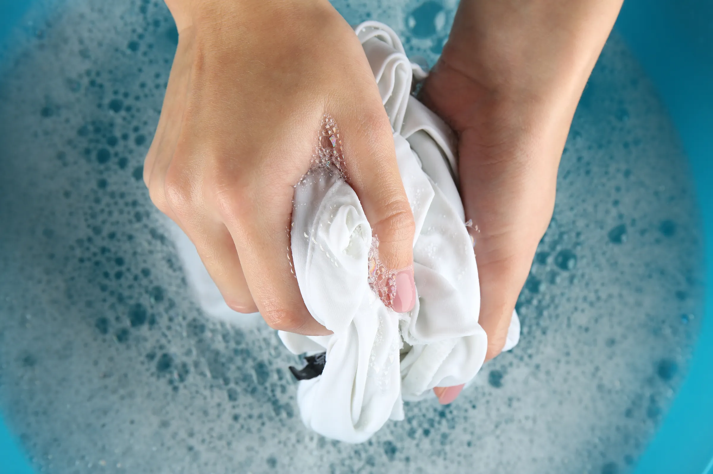
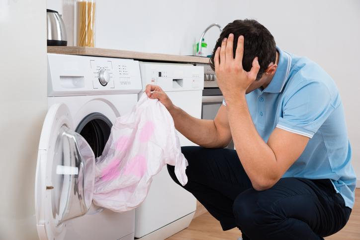

ENVIOS GRATIS A TODO EL PAIS A PARTIR DE $70.000
Te dejamos una serie de cuidados para no estropear tu camiseta
1. Si es posible, lava la camiseta a mano utilizando agua fría y un detergente suave.
2. Antes de lavarla, voltea la camiseta del revés. Esto ayuda a proteger los colores y los detalles impresos durante el lavado.
3. No uses productos blanqueadores ya que estos productos pueden dañar los colores y los materiales de la camiseta.
4. Si decides lavar la camiseta en la lavadora, asegúrate de hacerlo con otras prendas de colores similares para evitar que se manche o decolore.
5. Evita usar la secadora, ya que el calor puede encoger la camiseta o dañar los estampados. En su lugar, cuélgala para que se seque al aire libre.